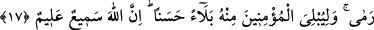

ATTIĞIN ZAMAN
SEN ATMADIN
17. (Savaşta) onları siz öldürmediniz, fakat onları Allah öldürdü; attığın zaman da
sen atmadın, fakat Allah attı. Ve bunu, müminleri güzel bir imtihanla denemek için
(yaptı). Şüphesiz Allah işitendir, bilendir.
18. Bu böyledir. Şüphesiz Allah kâfirlerin tuzaklarını bozar.
19. (Ey kâfirler!) Zafer istiyorsanız, işte size zafer geldi! (Yenelim derken
yenildiniz). Ve eğer (inkardan) vazgeçerseniz bu sizin için daha iyidir. Eğer tekrar
savaşa dönerseniz, biz de (ona) yardıma döneriz. Topluluğunuz çok bile olsa, sizden
hiçbir şeyi savamaz. Çünkü Allah müminlerle beraberdir.
Bedir günü kâfirleri öldürmekle övünürseniz bilin ki “onları siz” kendi kuvvet ve
kudretinizle “öldürmediniz, fakat onları” size yardım etmek, sizi onların üzerine
musallat etmek ve kalblerine korku salmak suretiyle “Allah öldürdü.”
Rivayet edildiğine göre Rasûlullah (s.a.v.), Bedir vâdisine inen Kureyş ordusunu
görünce Allah’a yönelip “İşte şu Kureyş senin rasûlünü yalanlayarak kibir ve
gururuyla karşımıza geldi. Allah’ım! Bana vâdettiğin şeyi tahakkuk ettirmeni
diliyorum.” diye dua etti.
Cebrail (a.s.) gelerek: “Yerden bir avuç toprak al ve onlara doğru at.” buyurdu. İki
ordu karşılaşınca Peygamberimiz (s.a.v.) Hz. Ali (r.a.)’ye “Bana vâdinin çakıllarından
ver.” buyurdu. Onları müşriklerin yüzlerine fırlattı ve “Yüzleriniz çirkin olsun.”
buyurdu.
Müşriklerden gözlerine ve burun deliklerine toprak isabet etmeyen kimse kalmadı.
Böylece yenildiler. Müminler de peşinden onların bir kısmını öldürdüler, bir kısmını da
esir ettiler.
Müminler savaştan galip gelerek ve ganimet elde etmiş olarak döndükten sonra: “Şunu
öldürdüm, şunu esir ettim, şöyle yaptım, böyle yapdım... ” diyerek övünmeye başladılar.
Bunun üzerine bu âyet indi.